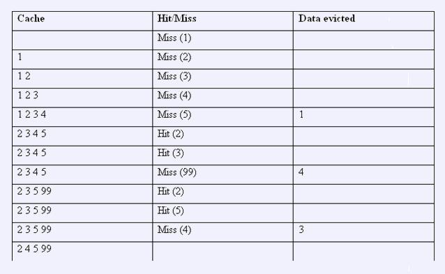

Notice:注册本OJ方式请见https://www.lydsy.com/JudgeOnline/wttl/thread.php?tid=5671
Problem 1454. -- Uva 11423 Cache Simulator1454: Uva 11423 Cache Simulator
Time Limit: 100 Sec Memory Limit: 259 MB
Submit: 24 Solved: 8
[Submit][Status][Discuss]Description

N个Cache, 每个Cache的大小为Size[i]
下面有若干行，是下列格式的一种:
ADDR X 表示访问元素X
RANGE B Y N ,表示依次访问元素 B+Y*K ( k=0,1…n-1)
STAT 输出每个Cache的Miss数( 从上次STAT开始统计 )
END 结束
保证命令的个数不超过20000
所有元素在[0,2^24 -1]
Cache的队列大小<=2^20
访问的次数不超过10^7
Input
第一行,一个整数N,表示有多少个Cache
接下来一行，包含N个正整数,表示每个Cache队列的大小。
下面有若干行，是下列格式的一种:
1. ADDR X 表示访问元素X
2. RANGE B Y N ,表示依次访问元素 B+Y*K ( k=0,1…n-1)
3. STAT 输出每个Cache的Miss数( 从上次STAT开始统计 )
4. END 结束
Output
对于每个STAT命令，输出N个整数
Sample Input
2
4 8
RANGE 1 1 5
RANGE 2 1 2
ADDR 99
STAT
ADDR 2
RANGE 5 -1 2
STAT
RANGE 0 10000 10
RANGE 0 20000 5
RANGE 0 30000 4
STAT
END
Sample Output
6 6
1 0
18 13
HINT
Source
[Submit][Status][Discuss]
HOME
Back